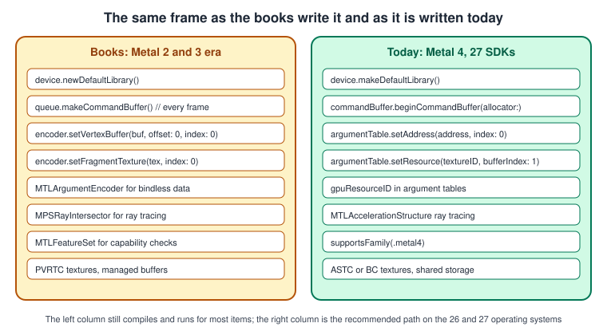
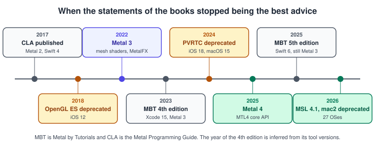
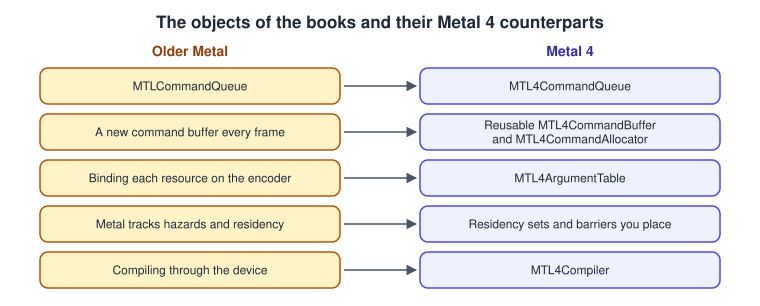
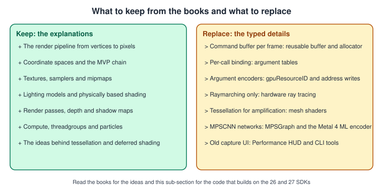

What Has Changed Since the Older Metal Guides
|
This content was generated with the assistance of AI and should be verified against the official documentation before being relied on in production. |
The ideas in the two older Metal books are still sound: a device that owns queues, command buffers that record encoders, pipeline state objects built from shaders, resources bound to a pass, a render loop that keeps a few frames in flight and a shading language that is a dialect of C++. What has changed is the newest layer of the API and almost everything that is typed: the command-recording model, the way resources are bound and kept resident, the capabilities that need an upgrade of the hardware baseline, and the tools and the Xcode needed to run the code. The books were written for Metal 2 (2017) and Metal 3 (2022), for Swift 4 and for Xcode 9 or 15; this sub-section documents Metal 4 (the 26 operating systems), MSL 4.1 (the 27 operating systems), Swift 6.4 and Xcode 27. This page lists, book by book, the statements that are out of date and what to do today, so that you can keep reading the books for their explanations and use the pages of this sub-section for current code. The facts were checked in November 2026 against Apple’s Metal documentation, the Metal Shading Language specification, the Metal Feature Set Tables and the Xcode release notes. For the changes that affect all graphics libraries, not only Metal, see What Has Changed Since the Older Guides.
The books are listed in the section bibliography and have the short names used in the tables: MBT (Caroline Begbie and Marius Horga, Metal by Tutorials, 4th edition, Kodeco) and CLA (Janie Clayton, Metal Programming Guide, Addison-Wesley, 2017). Chapter numbers are those of the books. The current edition of MBT is the 5th, published in November 2025: it moved to Swift 6 and the 26 SDKs but still teaches Metal 3, so most of the rows apply to it too.

The left panel is the style of both books; the right panel is the structure of Hello Triangle with Metal 4 and of Argument Buffers and Bindless Resources. Most of the left panel still runs, which is why the older code does not fail on the first line: the cost of staying on it is CPU time, missed hardware features and, for a few items, deprecation warnings.
The corrections, book by book
MBT: Metal by Tutorials, 4th edition
| Chapters | What the book says | What is current | OS release or date | Read more |
|---|---|---|---|---|
Introduction |
Metal 3 (2022) is the latest version of the API. |
Metal 4 shipped with the 26 operating systems in 2025, and MSL 4.1 with the 27 operating systems in 2026. The |
26 OSes and 27 OSes |
|
Introduction |
MetalFX is an upscaler. |
MetalFX also does frame interpolation and denoising, and the WWDC26 release added neural upscaling and denoising. |
26 OSes and WWDC26 |
|
What you need |
macOS 14 and Xcode 15 are the tools, and every Mac since 2012 runs Metal. |
Xcode 27 needs an Apple-silicon Mac on macOS 26.6 or later, and Metal 4 needs an A14 Bionic, an M1 or later, or Apple Vision Pro. |
27 OSes |
|
Whole book |
The 4th edition targets Metal 3, Xcode 15, macOS 14 and iOS 17. |
The 5th edition (November 2025) targets Swift 6, Xcode 26 and the 26 SDKs but still teaches Metal 3. Neither edition covers Metal 4. |
November 2025 |
|
1 to 3 and onward |
A new |
Metal 4 uses a reusable |
26 OSes |
|
2 and 4 |
Buffers on a Mac use managed storage, and the CPU calls |
Use shared storage for data the CPU writes and private storage for data only the GPU reads. Managed storage is deprecated in the 27 operating systems. |
27 OSes |
|
25 and 26 |
Resources are made available to shaders with |
Write |
iOS 16 and macOS 13, then 26 OSes |
Argument Buffers and Bindless Resources, Synchronization and Barriers |
19 |
Tessellation is the way to amplify geometry on the GPU. |
Mesh shaders (object and mesh functions) do amplification and level of detail with meshlets. Metal 4 render encoders have no tessellation configuration. |
iOS 16 and macOS 13 |
|
27 to 29 |
"Ray tracing" is raymarching and signed distance fields in a fragment shader. |
Hardware ray tracing uses |
iOS 14 and macOS 11, deprecation in iOS 17 and macOS 14 |
|
31 |
Profiling uses the older GPU-capture interface. |
Xcode adds the Performance HUD, the Summary and Shaders tabs, a GPU trace export, more validation, and since WWDC26 the command-line tools |
Xcode 26 and 27 |
CLA: Metal Programming Guide (2017)
| Chapters | What the book says | What is current | OS release or date | Read more |
|---|---|---|---|---|
Throughout |
The code is Swift 4 for Xcode 9 and loads the default library with |
|
Xcode 27 |
|
1 |
OpenGL ES is the default on iOS and Metal is replacing it. |
OpenGL and OpenGL ES are deprecated on Apple platforms (iOS 12 and macOS 10.14). Apple’s migration sample maps the concepts. |
iOS 12 and macOS 10.14 |
|
6 |
PVRTC is among the compressed texture formats. |
PVRTC is deprecated since iOS 18 and macOS 15. Use ASTC (or BC on the Mac) and mipmaps made by |
iOS 18 and macOS 15 |
|
15 |
A threadgroup on iOS is limited to 512 threads. |
1,024 threads on A11 and later. Read the limit from the device and check the Metal Feature Set Tables. |
A11 and later |
|
19 and 20 |
Neural networks are built with |
Use MPSGraph, Core ML or the Metal 4 machine-learning encoder with |
26 OSes |
Machine Learning in Metal 4, Image Processing, Metal Performance Shaders and MPSGraph |
Overall |
The baseline is an A7 device, iOS 11 and the debugging tools of Xcode 9. |
Metal 4 needs an A14, an M1 or later, or Apple Vision Pro, and capability checks use |
26 OSes and Xcode 27 |

A change that sits left of the books' own dates (OpenGL ES deprecated in 2018, for example) was already out of date when the books were read; a change at the right edge only matters for new code. Both groups need the same cure: use the call on the right of the tables above.

Both books
| What the books say | What is current | OS release or date | Read more |
|---|---|---|---|
Every frame creates a new command buffer, binds each resource to the encoder and relies on Metal to track hazards and residency. |
Metal 4 records into reusable command buffers, binds through argument tables, makes residency explicit with residency sets and expects you to place barriers between passes. |
26 OSes |
|
Neither book covers the Metal 4 core API, hardware ray tracing with acceleration structures, residency sets, fast resource loading and sparse textures, binary archives and dynamic libraries, |
These topics are covered from Apple’s documentation, and each page says so where it applies. |
26 OSes and WWDC26 |
Shader Compilation and Pipeline Caching, Resource Loading and Streaming, metal-cpp and Game Porting, Metal on visionOS |

What to keep from the books
-
The explanations of the render pipeline, of the model, view and projection chain, of texture mapping, of lighting models, of render passes and of compute remain correct. Only the names of the calls around them have changed.
-
The structure of the book projects (create a device, a queue, a pipeline, resources, then encode and present each frame) is the structure of Hello Triangle with Metal 4, with a Metal 3 equivalent shown next to it.
-
Where a book and Apple’s documentation or the Metal Shading Language specification disagree, follow the documentation.
-
The books' chapters on tile-based deferred rendering and on instancing explain concepts that Metal 4 did not change; read them with Deferred and Tile Shading and GPU-Driven Rendering and Indirect Command Buffers.
See also
-
Metal for the sub-section overview and its coverage map.
-
What’s New in Metal 4 for the full list of changes and the adoption plan.
-
Metal Cheat Sheet for the one-page deprecations strip.
References
-
Apple, Understanding the Metal 4 core API: https://developer.apple.com/documentation/metal/understanding-the-metal-4-core-api
-
Apple, Metal documentation: https://developer.apple.com/documentation/metal
-
Apple, Metal: what is new: https://developer.apple.com/metal/whats-new/
-
Metal Shading Language specification: https://developer.apple.com/metal/Metal-Shading-Language-Specification.pdf
-
Metal Feature Set Tables: https://developer.apple.com/metal/Metal-Feature-Set-Tables.pdf
-
Xcode 27 release notes: https://developer.apple.com/documentation/xcode-release-notes/xcode-27-release-notes
-
Migrating OpenGL code to Metal: https://developer.apple.com/documentation/metal/migrating-opengl-code-to-metal
-
The books listed in the section bibliography